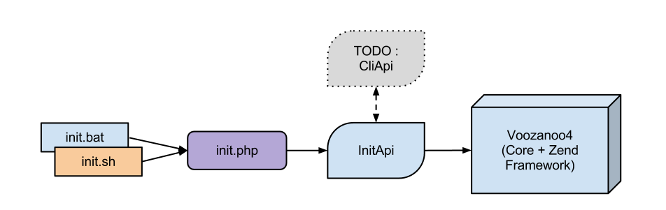

Installation¶
Ferme d’application¶
Conventions d’écriture¶
la marque TODO signale un mécanisme qui est encore à créer/mettre en place les chemins sont notés à partir de la racine du projet ferme, et débutent par un slash
Modes de fonctionnement¶
Le programme de “ferme” gère le DocumentRoot, et redirige vers l’application demandée en fonction de son nom. Il gère aussi la localisation des fichiers de configuration et l’espace pour les fichiers de travail de chaque application.
Le fichier prepend.php défini les chemins nécessaires
- CHEMIN_BASE : dossier dans lequel on trouve (le Bootstrap.php en dépend pour configurer son autoloader)
- la ferme
- applis : contenant les applications installées
- librairies externes
APPLICATION_ENV : défini le mode de configuration utilisé par la configuration ZF pour toutes les applications
CHEMIN_EXTLIB : chemin de la librairie externe
CHEMIN_VOO4 : chemin où sont stockés les cores de Voozanoo4
CHEMIN_APPLIS : chemin contenant les applications installées
CHEMIN_CONF : fichiers de configurations
CHEMIN_TRAVAIL : chemin pour les fichiers de travail des applications
Mode de fonctionnement “développement” par défaut (mais librement modifiable)
- les dossiers de travail et de configuration sont dans le dossier de la ferme (pour faire simple et ne pas disperser les choses)
Mode de fonctionnement “production”
- le dossier de travail est le seul sur lequel Apache à le droit d’écrire, il doit donc être sorti du /home (en prime cela évitera de sauvegarder les fichiers de travail)
- le dossier des fichiers de configuration doit être sauvegardé (Apache n’a pas les droits d’écriture dessus)
- les dossiers “ferme” et applications ne sont pas en écriture pour Apache
Installation¶
déployer le logiciel sur le serveur
- ajouter le contenu du fichier /documentation/conf_apache.txt au Virtualhost utilisé, en changeant
- le port d’écoute (directives Listen et VirtualHost)
- éventuellement l’IP du virtualhost
- le DocumentRoot qui doit pointer vers /public/
- les chemins utilisés dans les directives RewriteCond / RewriteRule, qui doivent pointer vers le dossier des applications
dans le php.ini mettre le fichier /prepend.php dans la directive auto_prepend_file (avec son chemin complet)
Dossier de travail¶
Le but est d’avoir un seul dossier accessible pour Apache, où l’on stockera
- le cache de Smarty et tout autre cache
- les fichiers temporaires, uploadés, en cours de compression/décompression
Ce dossier n’aura pas besoin d’être partagé entre les frontaux dans le cas d’un load-balancing, ni d’être sauvegardé. Il ne gère notamment pas le cas où une application devrait stocker de manière permanente des données sur disque. _TODO_ Chaque application devra y créer un dossier à son nom pour isoler ses fichiers des autres, et isoler les fichiers par session utilisateur pour permettre la concurrence. Une librairie devra être développé dans Voozanoo4 pour s’assurer d’une manière centralisée et unique qu’aucune faille ne permet d’accéder aux fichiers d’une autre application (la solution absolue étant d’isoler par utilisateur Unix mais cela demande une revue complète du serveur et impose des choix techniques non négligeables).
Dossier de configuration¶
Le but est d’avoir tous les fichiers au même endroit pour avoir facilement une vue d’ensemble, et faciliter la reconstruction d’un serveur. Il contient tous les éléments de configuration propre à une application (base de données, chemins d’inclusion, etc). Actuellement une application charge le fichier ini portant son nom. _TODO_ L’idée est de détacher le fichier ini du dossier de l’application, pour pouvoir librement déterminer en fonction de l’URL le dossier de code à utiliser et la configuration propre, ce qui permettrait notamment de n’installer qu’une seule version du pool d’enquête générique mais d’avoir un fichier de configuration par application.
Références¶
- SVN : https://www.epiconcept.fr/outils_internes/ferme/ (external link)
Documentation rewriting utilisée¶
- http://httpd.apache.org/docs/2.0/mod/mod_rewrite.html
- http://httpd.apache.org/docs/2.0/misc/rewriteguide.html
- http://httpd.apache.org/docs/2.0/rewrite/rewrite_guide_advanced.html
Sur la correction du / final manquant sur les URL
Initialisation d’un projet Voo4¶
Le noyau dispose d’un outil permettant l’initialisation d’un projet Voo4 (partie Base de données uniquement). Il existe deux versions de l’outil, init.bat (Windows) et init.sh (Linux).
Cet outil est présent dans src/tools/
Pré-requis¶
Comme dit précédemment cet outil s’occupe uniquement de l’initialisation coté Base de données, que ce soit depuis une base vierge ou depuis une base contenant déjà une projet Voozanoo4.
Avant de lancer l’outil d’initialisation assurez-vous :
- (S’il s’agit d’une initialisation depuis zéro)
- D’avoir “extrait” le squelette d’une Appli Voo4 depuis le Svn sur votre poste / le serveur (Url : https://svn.epiconcept.fr/squelette/voo4_vide/)
- D’avoir créé la base de données qui accueillera l’Application Voo4
- D’avoir accès à l’interpréteur php depuis le Terminal (Linux) / l’invite de commande (Windows)
- Pour Linux c’est normalement déjà fait si Php est installé (présent dans /usr/bin et par conséquent reconnu lors de l’appel à
php) - Pour Windows vous devez modifier la variable d’environnement
Pathafin d’ajouter le chemin vers le répertoire contenant php.exe (Voir Windows - Utiliser PHP depuis l’invite de commande)
- Pour Linux c’est normalement déjà fait si Php est installé (présent dans /usr/bin et par conséquent reconnu lors de l’appel à
D’avoir la librairie Zend Framework dans votre include_path (Voir Ajouter la librairie Zend Framework à l’include_path de PHP)
Pour Linux : D’avoir les droits d’exécution sur le Shell
init.sh
Utilisation¶
Les scripts (Batch / Shell) ont été conçus pour être relativement intuitifs, pour lancer l’initialisation d’un Projet Voo4 :
Ouvrez un terminal / un(e) invite de commande et placez vous dans le répertoire
src/toolsdu noyau Voozanoo4Lancez le script correspondant à votre OS (
init.batouinit.sh)- Suivez les indications à l’écran qui permettront de collecter :
- Le chemin absolu vers le répertoire des ressources de votre application (nécessaire pour la génération du fichier Xml des Acl/Rôles)
- Les paramètres de connexion à la base de données
- Les paramètres du projet à ajouter
- Les paramètres de l’utilisateur “Administrateur” à créer pour le projet
Fonctionnement¶
Schéma du fonctionnement de l’outil d’initialisation :
Accès aux fichiers javascript¶
Packaging & Déploiement¶
Cette section décrit comment packager une application ou un coeur Voozanoo4 et comment l’installer sur un serveur Linux. Packager signifie donc créer un package Debian .deb
Nomenclature des TAGS¶
Les packages sont construits à partir d’une extraction d’un tag sur SVN. Un tag doit être construit selon la forme suivante :
YYYYMMDD-XX.XX-NN
Exemple¶
20130812-01.13-04 : Définit la version 1.13 release 4.
Packaging VOOZANOO4 CORE¶
Contraintes développement¶
Le fichier APPINFOS doit ètre présent dans src/configs.
Ce fichier JSON doit contenir à minima les infos suivantes :
{
"PACKAGING": {
"INF_PACKAGE":"VOOZANOO4",
"INF_VERSION":"",
"INF_PRIORITY":"optional",
"INF_ARCHITECTURE":"all",
"INF_DEPENDS":[
"epi-zendframework-1.12.0",
"epi-yui-3.10.2",
"epi-yui-2.9.0",
"epi-jquery",
"epi-bootstrap",
"epiconcept-arborescence"
],
"INF_SECTION":"base",
"INF_MAINTENER":"Team FrameWork <framework@epiconcept.fr>",
"INF_DESCRIPTION":"Core Voozanoo4",
"INF_HOMEPAGE":"http://www.epiconcept.fr"
},
"DEPENDENCIES":{
"ZF":"1.12.3",
"YUI3": "3.10.2",
"YUI2": "2.9.0"
}
}
Note
Attention, il doit y avoir une cohérence entre les versions des paquets indiqués dans INF_DEPENDS` et celle présentes dans``DEPENDENCIES`` (ZendFramework, Yui2 et Yui3).
Créer le package¶
Se rendre sur le serveur de build.
ssh -A epiconcept_build@debian-build
Si il y a une demande de password, demander à Thierry ou à Cédric de mettre votre clé dans l’authorized_key de l’utilisateur. Une fois loggé, rendez vous directement dans le répertoire bin/
Exécutez la commande suivante :
./mkpack.voo4core TAG
./debenvoi votre_compte_linux
Exemple:
cd /var/epiconcept_build/bin
./mkpack.voo4core 20140429-02.13-01
./debenvoi john
Déploiement VOOZANOO4 CORE¶
Gestion des repositories¶
Si on procède sur un nouveau serveur sur lequel rien n’a été installé, il nous faut déclarer le repository de nos packages dans la base Debian
echo -e '/debsums/s/sp \/var/sp=\/var/\nwq' | ed /etc/apt/apt.conf.d/90debsums
echo "deb http://files.epiconcept.fr/repositories_apt/epiconcept squeeze main" > /etc/apt/sources.list.d/epiconcept.list
Installer un coeur Voozanoo4¶
exemple :
sudo ecdep up VOOZANOO4-0.0.1
/space
├── Archives
├── Work
└── www
├── apps
├── configuration
├── libs
│ ├── VOOZANOO3
│ ├── VOOZANOO4
│ │ └── 0.0.1
│ │ ├── libs
│ │ └── src
│ ├── YUI
│ │ ├── 2.9.0
│ │ │ ├── assets
│ │ │ ├── build
│ │ │ └── index.html
│ │ └── 3.10.2
│ │ ├── build
│ │ ├── LICENSE.md
│ │ └── README.md
│ └── ZendFramework
│ └── 1.12.0
│ └── Zend
└── tools
L’installation place donc le coeur dans /space/www/libs/VOOZANOO4/VERSION_DU_COEUR
Packaging d’une application VOOZANOO4¶
Se rendre sur le serveur de build.
ssh -A epiconcept_build@debian-build
Contraintes développement¶
Le fichier APPINFOS doit ètre présent dans src/configs.
Ce fichier JSON doit contenir à minima les infos suivantes (exemple) :
{
"PACKAGING": {
"INF_PACKAGE":"NEONAT_WEB",
"INF_VERSION":"01.01",
"INF_PRIORITY":"optional",
"INF_ARCHITECTURE":"all",
"INF_DEPENDS":"voozanoo4-2.14",
"INF_SECTION":"base",
"INF_MAINTENER":"Team FrameWork <framework@epiconcept.fr>",
"INF_DESCRIPTION":"Neonat Web",
"INF_HOMEPAGE":"http://www.epiconcept.fr"
},
"DEPENDENCIES":{
"VOOZANOO4":"2.14"
}
}
Dans le cas où l’application nécessite des dépendances spécifiques autres que celle définies par Voozanoo4, il faut que INF_DEPENDS soit sous la forme d’un tableau. Exemple :
{
"PACKAGING": {
"INF_PACKAGE":"NEONAT_WEB",
"INF_VERSION":"01.01",
"INF_PRIORITY":"optional",
"INF_ARCHITECTURE":"all",
"INF_DEPENDS":[
"voozanoo4-2.14",
"imagemagick-3.4"
],
"INF_SECTION":"base",
"INF_MAINTENER":"Team FrameWork <framework@epiconcept.fr>",
"INF_DESCRIPTION":"Neonat Web",
"INF_HOMEPAGE":"http://www.epiconcept.fr"
},
"DEPENDENCIES":{
"VOOZANOO4":"2.14"
}
}
Créer le package¶
Exécutez la commande suivante :
./mkpack.voo4appli [release_name] APP_NAME TAG
./debenvoi votre_compte_linux
Le release_name est facultatif, ce serait le nom de l’application une fois installée si il est présent.
Exemple avec un repository qui se nomme SIGL:
cd /var/epiconcept_build/bin
./mkpack.voo4appli NEONATLABO SIGL 20140429-01.01-01
./debenvoi john
Contraintes à respecter avant l’installation¶
Le fichier JSON space/www/configuration/server/INFOS doit exister et ètre un minimum configuré. Par exemple, si le serveur est un serveur de développement :
{
"default_db_host" : "localhost",
"default_db_user" : "root",
"default_db_pwd" : "",
"default_http_port" : 80,
"default_https_port" : 443,
"default_server_ip" : "192.168.1.16",
"default_server_tld" : "voozanoo.net",
"default_server_env" : "development",
"default_httpd_logdir" : "/var/log/apps/"
}
Installer l’application¶
sudo ecdep up [epi]-[nom_du_package]-[version]
Exemple:
sudo ecdep up epi-neonatlabo-1.01
Exemple d’arborescence générée avec ecdep up mysaga-0.0.02
/space
├── Archives
├── Work
└── www
├── apps
│ └── mysaga
│ └── mysaga_0.0.02
├── configuration
├── htdocs
│ └── javascript
│ ├── voo3
│ └── voo3yui
├── libs
│ ├── VOOZANOO3
│ ├── VOOZANOO4
│ │ └── 0.0.1
│ │ ├── libs
│ │ └── src
│ ├── YUI
│ │ ├── 2.9.0
│ │ │ ├── assets
│ │ │ ├── build
│ │ │ └── index.html
│ │ └── 3.10.2
│ │ ├── build
│ │ ├── LICENSE.md
│ │ └── README.md
│ └── ZendFramework
│ └── 1.12.0
│ └── Zend
└── tools
Dans cet exemple l’application s’intalle dans /space/www/apps/mysaga/mysaga_0.0.02
NB: Modifications apportées aux configs :
- CONF appli voo4 (ce qu’on a surchargé dans le application.ini)
- voozanoo.resources.path = APPLICATION_PATH “/resources”
- voozanoo.baseurl = “/”
- lib.voozanoo.javascript.url = “/VooLibJs”
- lib.voozanoo.assets.url = “/VooLibAssets”
- lib.yui.url = “/yui”
- lib.yui2.url = “/yui2”